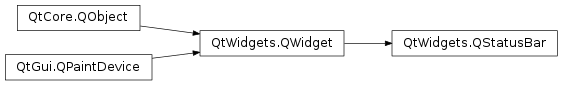
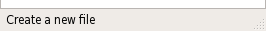

QStatusBar¶
Synopsis¶
Functions¶
- def
addPermanentWidget(widget[, stretch=0]) - def
addWidget(widget[, stretch=0]) - def
currentMessage() - def
hideOrShow() - def
insertPermanentWidget(index, widget[, stretch=0]) - def
insertWidget(index, widget[, stretch=0]) - def
isSizeGripEnabled() - def
reformat() - def
removeWidget(widget) - def
setSizeGripEnabled(arg__1)
Slots¶
- def
clearMessage() - def
showMessage(text[, timeout=0])
Signals¶
- def
messageChanged(text)
Detailed Description¶
The
PySide2.QtWidgets.QStatusBarclass provides a horizontal bar suitable for presenting status information.Each status indicator falls into one of three categories:
- Temporary - briefly occupies most of the status bar. Used to explain tool tip texts or menu entries, for example.
- Normal - occupies part of the status bar and may be hidden by temporary messages. Used to display the page and line number in a word processor, for example.
- Permanent - is never hidden. Used for important mode indications, for example, some applications put a Caps Lock indicator in the status bar.
PySide2.QtWidgets.QStatusBarlets you display all three types of indicators.Typically, a request for the status bar functionality occurs in relation to a
PySide2.QtWidgets.QMainWindowobject.PySide2.QtWidgets.QMainWindowprovides a main application window, with a menu bar, tool bars, dock widgets and a status bar around a large central widget. The status bar can be retrieved using theQMainWindow.statusBar()function, and replaced using theQMainWindow.setStatusBar()function.Use the
PySide2.QtWidgets.QStatusBar.showMessage()slot to display a temporary message:def createStatusBar(self): statusBar().showMessage(tr("Ready"))To remove a temporary message, use the
PySide2.QtWidgets.QStatusBar.clearMessage()slot, or set a time limit when callingPySide2.QtWidgets.QStatusBar.showMessage(). For example:def print(self) document = textEdit.document() printer = QPrinter() dlg = QPrintDialog(&printer, self) if dlg.exec() != QDialog.Accepted: return document.print(printer) statusBar().showMessage(tr("Ready"), 2000)Use the
PySide2.QtWidgets.QStatusBar.currentMessage()function to retrieve the temporary message currently shown. ThePySide2.QtWidgets.QStatusBarclass also provide thePySide2.QtWidgets.QStatusBar.messageChanged()signal which is emitted whenever the temporary status message changes.Normal and Permanent messages are displayed by creating a small widget (
PySide2.QtWidgets.QLabel,PySide2.QtWidgets.QProgressBaror evenPySide2.QtWidgets.QToolButton) and then adding it to the status bar using thePySide2.QtWidgets.QStatusBar.addWidget()or thePySide2.QtWidgets.QStatusBar.addPermanentWidget()function. Use thePySide2.QtWidgets.QStatusBar.removeWidget()function to remove such messages from the status bar.statusBar().addWidget(MyReadWriteIndication())By default
PySide2.QtWidgets.QStatusBarprovides aPySide2.QtWidgets.QSizeGripin the lower-right corner. You can disable it using thePySide2.QtWidgets.QStatusBar.setSizeGripEnabled()function. Use thePySide2.QtWidgets.QStatusBar.isSizeGripEnabled()function to determine the current status of the size grip.
-
class
PySide2.QtWidgets.QStatusBar([parent=nullptr])¶ Parameters: parent – PySide2.QtWidgets.QWidgetConstructs a status bar with a size grip and the given
parent.
-
PySide2.QtWidgets.QStatusBar.addPermanentWidget(widget[, stretch=0])¶ Parameters: - widget –
PySide2.QtWidgets.QWidget - stretch –
PySide2.QtCore.int
Adds the given
widgetpermanently to this status bar, reparenting the widget if it isn’t already a child of thisPySide2.QtWidgets.QStatusBarobject. Thestretchparameter is used to compute a suitable size for the givenwidgetas the status bar grows and shrinks. The default stretch factor is 0, i.e giving the widget a minimum of space.Permanently means that the widget may not be obscured by temporary messages. It is is located at the far right of the status bar.
- widget –
-
PySide2.QtWidgets.QStatusBar.addWidget(widget[, stretch=0])¶ Parameters: - widget –
PySide2.QtWidgets.QWidget - stretch –
PySide2.QtCore.int
Adds the given
widgetto this status bar, reparenting the widget if it isn’t already a child of thisPySide2.QtWidgets.QStatusBarobject. Thestretchparameter is used to compute a suitable size for the givenwidgetas the status bar grows and shrinks. The default stretch factor is 0, i.e giving the widget a minimum of space.The widget is located to the far left of the first permanent widget (see
PySide2.QtWidgets.QStatusBar.addPermanentWidget()) and may be obscured by temporary messages.- widget –
-
PySide2.QtWidgets.QStatusBar.clearMessage()¶ Removes any temporary message being shown.
-
PySide2.QtWidgets.QStatusBar.currentMessage()¶ Return type: unicode Returns the temporary message currently shown, or an empty string if there is no such message.
-
PySide2.QtWidgets.QStatusBar.hideOrShow()¶ Ensures that the right widgets are visible.
Used by the
PySide2.QtWidgets.QStatusBar.showMessage()andPySide2.QtWidgets.QStatusBar.clearMessage()functions.
-
PySide2.QtWidgets.QStatusBar.insertPermanentWidget(index, widget[, stretch=0])¶ Parameters: - index –
PySide2.QtCore.int - widget –
PySide2.QtWidgets.QWidget - stretch –
PySide2.QtCore.int
Return type: PySide2.QtCore.intInserts the given
widgetat the givenindexpermanently to this status bar, reparenting the widget if it isn’t already a child of thisPySide2.QtWidgets.QStatusBarobject. Ifindexis out of range, the widget is appended (in which case it is the actual index of the widget that is returned).The
stretchparameter is used to compute a suitable size for the givenwidgetas the status bar grows and shrinks. The default stretch factor is 0, i.e giving the widget a minimum of space.Permanently means that the widget may not be obscured by temporary messages. It is is located at the far right of the status bar.
- index –
-
PySide2.QtWidgets.QStatusBar.insertWidget(index, widget[, stretch=0])¶ Parameters: - index –
PySide2.QtCore.int - widget –
PySide2.QtWidgets.QWidget - stretch –
PySide2.QtCore.int
Return type: PySide2.QtCore.intInserts the given
widgetat the givenindexto this status bar, reparenting the widget if it isn’t already a child of thisPySide2.QtWidgets.QStatusBarobject. Ifindexis out of range, the widget is appended (in which case it is the actual index of the widget that is returned).The
stretchparameter is used to compute a suitable size for the givenwidgetas the status bar grows and shrinks. The default stretch factor is 0, i.e giving the widget a minimum of space.The widget is located to the far left of the first permanent widget (see
PySide2.QtWidgets.QStatusBar.addPermanentWidget()) and may be obscured by temporary messages.- index –
-
PySide2.QtWidgets.QStatusBar.isSizeGripEnabled()¶ Return type: PySide2.QtCore.bool
-
PySide2.QtWidgets.QStatusBar.messageChanged(text)¶ Parameters: text – unicode
-
PySide2.QtWidgets.QStatusBar.reformat()¶ Changes the status bar’s appearance to account for item changes.
Special subclasses may need this function, but geometry management will usually take care of any necessary rearrangements.
-
PySide2.QtWidgets.QStatusBar.removeWidget(widget)¶ Parameters: widget – PySide2.QtWidgets.QWidgetRemoves the specified
widgetfrom the status bar.Note
This function does not delete the widget but hides it. To add the widget again, you must call both the
PySide2.QtWidgets.QStatusBar.addWidget()andPySide2.QtWidgets.QWidget.show()functions.
-
PySide2.QtWidgets.QStatusBar.setSizeGripEnabled(arg__1)¶ Parameters: arg__1 – PySide2.QtCore.bool
-
PySide2.QtWidgets.QStatusBar.showMessage(text[, timeout=0])¶ Parameters: - text – unicode
- timeout –
PySide2.QtCore.int
Hides the normal status indications and displays the given
messagefor the specified number of milli-seconds (timeout). Iftimeoutis 0 (default), themessageremains displayed until thePySide2.QtWidgets.QStatusBar.clearMessage()slot is called or until the slot is called again to change the message.Note that is called to show temporary explanations of tool tip texts, so passing a
timeoutof 0 is not sufficient to display apermanent message.
© 2018 The Qt Company Ltd. Documentation contributions included herein are the copyrights of their respective owners. The documentation provided herein is licensed under the terms of the GNU Free Documentation License version 1.3 as published by the Free Software Foundation. Qt and respective logos are trademarks of The Qt Company Ltd. in Finland and/or other countries worldwide. All other trademarks are property of their respective owners.